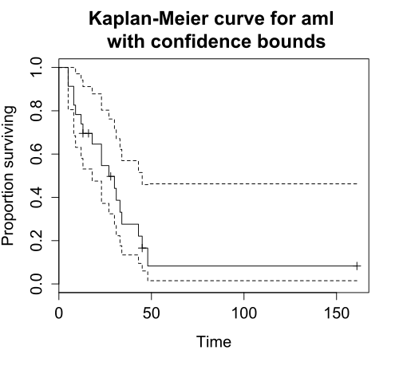
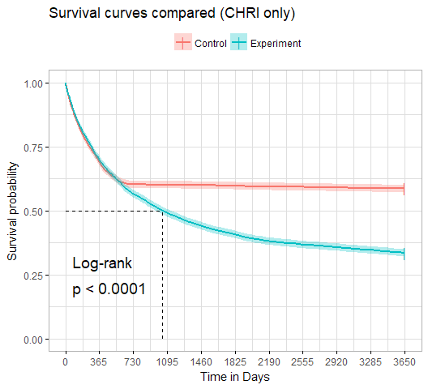
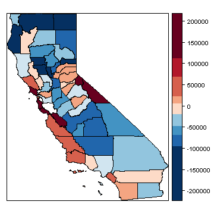

R Workshop: Module 5 (2)
Bobae Kang
April 18, 2018

This page contains the notes for the second part of R Workshop Module 5: Statistical modeling with R, which is part of the R Workshop series prepared by ICJIA Research Analyst Bobae Kang to enable and encourage ICJIA researchers to take advantage of R, a statistical programming language that is one of the most powerful modern research tools.
Links
Click here to go to the workshop home page.
Click here to go to the workshop Modules page.
Click here to view the accompanying slides for Module 5, Part 2.
Navigate to the other workshop materials:
Statistical modleing with R (2): Options for advanced modeling
In the previous Part of Module 5, we have explored how to conduct basic statistical analysis with R. Now we would like move toward the realm of advanced statistical modeling. In order to facilitate such progress in knowledge, this Part offers a crude introduction to some advanced modeling topics (survival analysis, time series analyis, spatial regression analysis, and machine learning) as well as a list of relevant R packages.
Please note that the current Part is barely scratching the surface of any of the introduced topics. Think of this Part as taking the very first step, and refer to the suggested resource materials to learn more about each topic.
Survival analysis
Source: Wikimedia Commons
What is Survival analysis?
“Survival analysis is used to analyze data in which the time until the event is of interest. The response variable is the time until that event and is often called a failure time, survival time, or event time.”
- Harrell Jr. (2015).
In survival analysis, the response variable is a non-negative discrete/continuous random variable, which represents the time to event for each subject/observation.
Survival analysis basics
We start this section by introducing some basic concepts in survival anaylsis.
Failure/event
Failure, or event, refers to an event of interest where the time, \(T\), from the beginning of observation to the occurence of an event is measured and available for modeling.
Examples of event include:
- Death
- Recidivism (rearrest, reconviction, or reincarceration)
- Disease occurence/recurrence
Censoring
Observations are called censored when the information about their survival time is incomplete.
The most common form of censoring is right-censoring, where the final endpoint is only known to exceed a particular value. Right censored data most likely occurs due to the end of the study/observation period.
Survival function
The survival function \(S(t)\) is the probability that the time of event/failure is later than some specified time \(t\). Using mathematical notation:
\[S(t) = \text{Pr}(T > t),\quad 0 < t < \infty.\]
Hazard function
The hazard function \(\lambda(t)\) is the event rate at time \(t\), conditional on survival (i.e. no event) until time \(t\) or later:
\[\lambda(t) = \lim_{dt\to0} \frac{\text{Pr}(t \leq T < t + dt)}{S(t)dt} = \frac{S'(t)}{S(t)}\]
Packages on survival analysis
R ecosystem offers a number of packages to offer tools and functionalities pertaining to survival analysis.
Among many, the survival package is the most essential, which makes available the Surv class that is fundamental to a survival analysis tools in R ecosystem. For more details, you may visit its GitHub repository and read the package vignettes available on the package CRAN page
survminer package helps visualization of survival models. Take a look at the package website or the GiHub repository for more information.
Basic survival models
In the following, we will introduce two basic models for survival analysis:
- Kaplan-Meier estimator
- Cox proportioanl hazards model
Kaplan-Meier estimator
The Kaplan-Meier (KM) estimator is perhaps the most widely used nonparametric estimator of the survival function. Mathematically, the KM estiamor \(\hat{S}(t)\) is the product over the failure times of the conditional probabilities of surviving to the next failure time, expressed as follows:
\[\hat{S}(t) = \prod_{t_i \leq t} \Big( 1 - \frac{d_i}{n_i} \Big),\]
where \(d_i\) is the number of subjects who fail at time \(t\) and \(n_i\) is the number of subjects at risk at time \(t\).
Surv function and Surv class
survival::Surv(time, time2, event, type, ...)survival package has Surv() function to create objects of Surv class, which is used in many survival analysis tools in R.
In Surv(), time is the follow up time for the right censored data. For interval censored data, time is the starting time and time2 is the ending time.
event is the status indicator, where 0 = alive (i.e., event not occured), 1 = dead (i.e., event occured).
type is a character string of the censoring type. Available inputs include “right” for right censoring, “left” for left censoring, and “interval” for interval data.
Surv() returns a Surv class object, used to fit survival models.
survfit function
survival::survfit(formula/model, data, ...)survfit() function returns a survival curve. The function uses KM estimator if with formula. If model is given, the survival curve is based on the input model (e.g. Cox model).
When formula is used for the KM estimator, it must have the Surv object as the response variable and might look like: Surv(time, status) ~ x.
data is optional, and if provided, the columns of the input data frame can be used in the formula.
Proportional hazards model
Cox proportional hazrads model, or simply Cox (regression) model, models the effect of a set of explanatory variables on the hazard or risk of failure over time.
The model assumes that the unique effect of a change in a covariate is multiplicative with respect to the hazard rate. The model is given as follows:
\[\lambda(t|\boldsymbol{\text{x}}_i) = \lambda_0(t)\psi_i = \lambda_0(t)\text{exp}(\boldsymbol{\text{x}}_i^{\text{T}}\beta),\] where \(\boldsymbol{\text{x}}_i\) denotes the covariate values for subject \(i\). The estimated coefficient is interpreted in releative terms.
coxph function
survival::coxph(formula, data, ...)survival package offers coxph function to fit Cox models. As in the case of survfit(), formula for coxph() must have the Surv object as the response variable. Again, data is optional and if provided, the columns of the input data frame can be used in the formula.
Plotting survival curve
plot(survfit)
survminer::ggsurvplot(survfit, data, ...)There are two ways to plot survival curves.
First, we can simply use the bas R plotting function, plot(), since the survival package provides a plot method for survfit objects.
Alternatively, we can used ggsurvplot() from the survminer package to plot survival curves. ggsurvplot() has ggplot2-like API and makes ggplot2 themes available. The output of ggsurvplot() might look like this:

Other resources
Obviously, what we have covered above is only the first step toward survival analysis in R. Please refer to the following resources. Also, for specific functions, remember to take advantage of the reference manuals using ? or help().
- Diez, D. M. (2013). “Survival Analysis in R”.
- Econometrics Academy. (2013). “Survival Analysis”.
- Rickert, J. (2017). “Survival Analysis with R” on R Views.
- Moore, D. R. (2016). Applied Survival Analysis Using R.
Time series analysis

Source: Wikimedia Commons
What is time series analysis?
A time series is a set of observations measured sequentially through time. Examples of time series include annual crime count for multiple years and fluctuations in stock prices.
Time series analysis then involves modeling such time series data, often for making forecasts, i.e., predicting what comes next based on the information from the historical records.
Time series basics
Before we take a look at specific time series analysis tools and models, let’s take a brief look at some basic concepts
Decomposition
Decomposition refers to the work of separating a time series into trend, seasonal effects, and remaining variability.
The following plot provides a visual illustration of decomposing a time series into its components:

Seasonality
The notion of seasonality, also called seasonal variation, pertains to similar and recurrent patterns of behavior in data at particular times of the given period. Seaonality is generally annual in period, but could be monthly, weekly, daily, or any other kind of periods.
Stationarity
Stationarity is a common assumption underlying any time series analysis techniques. A stationary process is a stochastic process of which the mean, covariance and autocorrelation structure do not change over time.
The following figure illustrates the difference between a stationary time series and a non-stationary one:

Source: “Stationary process”, Wikipedia
Differencing
Differencing refers to a time sereis analysis technique to make the series stationary, de-trend, and control the auto-correlations.
Packages on time series analysis
stats package, which is part of R “base packages”, provide a wide range of useful tools for time series analysis.
There is, of course, no shortage of third-party packages to offer additional functionalities relevant to time series analysis. Among many, forecast package seems to be a popular choice. Visit the package website] to find out more. There also exists a full-fledged online textbook using forecast package: Hyndman, R. & Athanasopoulos, G. (2018). Forecasting: Principles and Practice.
Basic time series analysis
Let’s take a look at some basic time series analysis techniques and how to implement them in R. Specifically, we will take a look at the following:
- Time series decomposition
- Autocorrelation function plots
- Partial autocorrelation function plots
Time series decomposition
A time series \(y_t\) can be decoposed into three components:
- The seasonal component \(S_t\)
- The trend-cylce \(T_t\)
- The remainder \(R_t\)
There are two models for decomposing a time series. One is additive and the other is multiplicative.
- Additive model is expressed in the following way: \(\quad y_t = S_t + T_t + R_t\).
- Multiplicative model is expressed as follows: \(\quad y_t = S_t \times T_t \times R_t\). Taking natural log of both sides of the equation, we can rewrite it as \(\quad \text{ln } y_t = \text{ln } S_t + \text{ln } T_t + \text{ln } R_t\).
decompose and stl functions
decompose(x, type = c("additive", "multiplicative"), ...)
stl(x, s.window, ...)stats offers two functions for time series decomposition using different methods for time series decomposition.
decompose() uses moving averages to decompose a time series. Here, type input specifices whether seasonal components are additive or multiplicative.
stl() uses LOESS (local regression), which is a more modern technique for time series decomposition. For that reason, stl is often recommended for time series decomposition. s.window input controls the span of the LOESS window for seasonal extraction (must be odd and at least 7). The decomposion is additive by default, but taking natural log of the data will account for multiplicative decomposition.
ACF and PACF plots
Autocorrelation function (ACF) and Partial autocorrelation function (PACF) plots of a differenced time series offer a heuristic way to choose specifications for ARIMA models, which we will explore shortly.
It is beyond the scope of the current Part to offer a full description of how each function is computed and how to use them as a guide to selecting a proper time series model. However, you can read this “Guide” for how to use ACF and PACF plots for selecting models to fit.
Roughly:
- Nonstationary series would present ACF with many significant lags
- Autoregressive processes would present exponentially declining ACF and one or more significant lags of the PACF
- Moving average processes would present ACF and PACF with the pattern opposite to that of autoregressive processes
acf and pacf functions
acf(x, lag.max = NULL, plot = TRUE,
type = c("correlation", "covariance", "partial"), ...)
pacf(x, lag.max = NULL, plot = TRUE, ...)acf() and pacf() from stats package can generate ACF and PACF plots from the input x, a univariate time series.
In acf(), type = "correlation" is the default for an ACF plot. Also, pacf() is equivalent to acf() with type = "partial".
Basic time series models
Here we will take a brief look at the following basic time series models:
- Autoregressive (AR) model
- Moving average (MA) model
- ARMA model
- ARIMA model
AR model
\(\{X_t\}\) is an autoregressive process of order \(p\), \(\text{AR}(p)\):
\[X_t = Z_t + \sum_{i=1}^p \phi_i X_{t-i},\] \[\text{rewritten as }\phi(B)X_t = Z_t\] Here, \(Z_t\) is a white noise (stationary) with mean 0 and the constant variance, and \(\phi_i\) is the autoregressive parameter for the \(i^{th}\) order. Finally, \(\phi(B)X_t\) can be unpacked: \(\phi(B)X_t = 1 - \phi_1B - ... - \phi_pB^p\).
MA model
\(\{X_t\}\) is an moving average process of order \(q\), \(\text{MA}(q)\):
\[X_t = Z_t + \sum_{i=1}^q \theta_i X_{t-i},\] \[\text{rewritten as }X_t =\theta(B)Z_t\] Again, \(Z_t\) is a white noise. \(\theta(B)\) can be unpacked as: \(\theta(B) = 1 + \theta_1B + ... + \theta_qB^q\)
ARMA and ARIMA model
Combining \(\text{AR}(p)\) and \(\text{MA}(q)\), we get \(\text{ARMA}(p, q)\):
\[\phi(B)X_t =\theta(B)Z_t\]
We can also incorporate differencing to non-stationary data in order to generate stationarity needed to fit AR, MA, and ARMA models. With \(d^{th}\) differences, we get \(\text{ARIMA}(p, d, q)\):
\[\phi(B)(1-B)^dX_t =\theta(B)Z_t\]
arima function
arima(x, order = c(0L, 0L, 0L), seasonal = list(order, period) ...)arima() from the stats package is the function used to fit ARIMA univariate time series models. The first input of arima() is x, a vector of a univariate time series.
Then, order input is used to specify the (p, d, q) for ARIMA model, in that order. If d and q are both 0, it is a \(\text{AR}(p)\) model. If p and d are both 0, it is a \(\text{MA}(q)\) model. If d equals 0, it is \(\text{ARMA}(p, q)\) model.
seasonal is a specification of the seasonal part of ARIMA model, consists of order and period.
Refer to the reference manual documentation using ?armia for more details.
Other resources
The following resource materials can help you to dive deeper into the time series analysis with R:
- Coghlan, A. (2017). “A Little Book of R for Time Series”.
- Econometrics Academy. (2013). “Time Series ARIMA Models”.
- Vidoe lectures; using
statsandtseriespackages
- Vidoe lectures; using
- Prabhakaran, S. “Time Series Analysis” on r-statistics.co.
- Shumway, R. & Stoffer, D. (2017). Time Series Analysis and Its Applications: With R Examples. (4th ed.). (textbook)
Spatial regression analysis
Source: R Spatial
What is spatial regression analysis?
Spatial regression analysis is for modeling data with spatial dependence, which refers to the spatial relationship of variable values or locations. Spatial regression then seeks to capture the effect of spatial dependence in the statistical modeling efforts.
Spatial regression basics
Neighbors
Neighbors of a spatial data point are other data points that are proximate to the focal data point. There are various ways to define neighbors:
- Contiguity-based (rook and queen contiguity) ways define neighbors based on shared borders.
- Distance-based ways define neighbors based on some distance crieterion. All data points that are within \(d\) units of distance from a data point
xare neighbors ofx. - K-nearest neighbors define \(k\) nearest data points to a data point
xto be the neighbors ofx.
Try this Shiny application by Klye E. Walker to see how the neighboring structure changes with different definitions.
spatial weights
Spatial weights represent the significance of neighbors. This reflects an intuition that not all neighbors are equally important. However, in practice, weights are often binary: 1 if neighbors and 0 otherwise.
For geospaital data expressed in polygons (e.g. counties), contiguity-based neighbors are used to construct spatial weights.
- Rook contiguity weights are based on rook contiguity, where any polygons with multiple points of shared border are considered to be neighbors.
- Queen contiguity weights are based on queen contiguity, where any polygons with a single point of shared border are considered to be neighbors.
- Block weights are constructed by considering all data points in the same block to be neighbors to one another.
- Higher order contiguity accounts for the influnece of neighbors of neighbors, often with some decay parameter to differentiate different orders of neighbors.
Spatial packages in R
Currently, there are two major packages to create and manipulate spatial objects: sp and sf.
sp is a mature package that is first release on CRAN in 2005. Currently, over 130 packages on CRAN are dependent on and built on top of sp. However its objects have un-tidy structures, making it often difficult to work with.
sf is a new package that is first released on CRAN in 2016. It is an R implementation of the “Simple Features Access” standard (ISO 19125) for geospatial data. Its spatial objects are better suited for tidy framework and its user base is growing. So far, however, sp remains to be the dominant framework for spatial data structure and analysis.
spdep package
spdep package is, to my knowledge, the most comprehensive package for spatial regression analysis in R. Its functions use sp spatial objects. To use spdep with sf objects, they must be first coerced into sp spatial objects.
Take a look at the following resource materials for spdep and spatial data analysis with R:
- Package
spdepreference manual{target=“_blank“. - Bivand R. (2017). “Creating Neighbours.”
- Bivand R. (2017). “The Problem of Spatial Autocorrelation: forty years on.”
Creating neighbors and weights matrix
The first step of spatial regression analysis involves creating neighbors and weights matrix for the model specification.
spdep offers *2nb() functions to create neighbors (nb object):
poly2nb()for continuity-based neighborsknn2nb()for distance-based neighborstri2nb()for grid-based neighborscell2nb()for grid neighbors
Then, nb2listw() function is used to generate a list of spatial weights (listw object) from an nb object.
poly2nb function
spdep::ploy2nb(pl, row.names = NULL, queen = TRUE, ...)Let’s take a look at the poly2nb function interface as an example of *2nb() functions.
Here, pl is a list of polygons (e.g. SpatialPolygons class). If queen is TRUE, polygons with a single shared boundary point are considered neighbors; if FALSE, more than two shared poitns are needed.
nb2listw function
spdep::nb2listw(neighbours, ...)The nb2listw function takes a neighbours object of class nb and returns a spatial weights list (listw)
Basics of spatial modeling
Now we will explore the basics of spatial modeling, which include the following:
- Morans’ I
- Lagrange multplier tests
- Spatial autorgressive lag model
- Spatial autoregressive error model
Moran’s I
Moran’s I is one of the most commonly used statistic for spatial autocorrelation. It is given in the following format:
\[I = \frac{\boldsymbol{\text{e}}^\text{T}\boldsymbol{\text{W}}\boldsymbol{\text{e}}/S_0}{\boldsymbol{\text{e}}^\text{T}\boldsymbol{\text{e}}/n} = \frac{\boldsymbol{\text{e}}^\text{T}\boldsymbol{\text{W}}\boldsymbol{\text{e}}/S_0}{\hat{\sigma}^2_{ML}},\]
where \(S_0\) is the sum of the weights, and \(\boldsymbol{\text{e}}\) is a vector of OLS residulas.
It is a non-constructive test, which means that no specific model is implied as an alternative hypothesis. The test is formulated as follows:
\[I_z = \frac{I - \text{E}[I]}{\sqrt{\text{Var}[I]}} \sim N(0, 1)\]
moran.test and lm.morantest
spdep::moran.test(x, listw, ...)
spdep::lm.morantest(model, listw, ...)spdep offers two functiosn for conducting Moran’s I test.
moran() takes a numeric vector of data and a spatial weights list (listw) created by nb2listw. On the other hand, lm.morantest() takes a lm object and a spatial weights list.
A small p-value for the test statistic suggests the presence of special autocorrelation that is not accounted for in the ordinary least squares (OLS) model.
Lagrange multiplier tests
Unlike Moran’s I test, Lagrange multiplier (LM) tests for spatial lag model and spatial error model have specific models implied in their alternative hypothesis.
In either type of LM test, the null hypothesis is no spatial autocorrelation
- \(H_0: \rho = 0\) for spatial lag model
- \(H_0: \lambda = 0\) for spatial error model
There are also “Robust” LM test, which are used when LM tests for both lag model and error model reject the null.
lm.LMtests function
spdep::lm.LMtests(model, listw, test = "LMerr")The lm.LMtests() function is used for conducting LM tests for various types of spatial models. lm.LMtests() takes a lm model and a spatial weights list (listw).
Then, test input specifies which test to implement. Available inputs for test include:
"LMerr"and"LMlag"for spatial error and spatial lag model"RLMerr"and"RLMlag"for robust LM tests"SARMA"for spatial ARMA model
Spatial lag model
Spatial lag model models spatial autoregression of the response variable. The model is formulated as follows:
\[\boldsymbol{\text{y}} = \rho\boldsymbol{\text{W}}\boldsymbol{\text{y}} + \boldsymbol{\text{X}}\beta + \boldsymbol{\text{u}},\]
where \(\boldsymbol{\text{W}}\boldsymbol{\text{y}}\) is a spatial lag term, \(\rho\) is a spatial autoregressive parameter, and \(\boldsymbol{\text{u}}\) is an error term.
Spatial error model
Spatial error model models spatial dependence on the error term, and is expressed in the following form:
\[\boldsymbol{\text{y}} = \boldsymbol{\text{X}}\beta + \boldsymbol{\text{u}}, \text{where}\] \[\boldsymbol{\text{u}} = \lambda\boldsymbol{\text{W}}\boldsymbol{\text{u}} + \varepsilon\] Here, \(\boldsymbol{\text{W}}\) is a weights matrix, \(\lambda\) is a spatial autoregressive parameter for the error term, and \(\varepsilon\) is an idiosyncratic error term.
lagsarlm() and errorsarlm()
spdep::lagsarlm(formula, data, listw, ...)
spdep::errorsarlm(formula, data, listw, ...)These two are functions to fit lag and error models. formula and data works like in lm(), and listw is a spatial weights matrix.
Other resources
To know more about spatial regression analysis in general and its implementation in R, refer to the following materials:
- Anselin, L. (2007). Spatial Regression Analysis in R: A Workbook.
- Econometrics Academy. (2013). “Spatial Econometrics”.
- Lovelace, R. et al. (2018).Geocomputation with R.
- Sarmiento-Barbieri, I. “An Introduction to Spatial Econometrics in R”.
- Hijmans, R. (2016). R Spatial.
Machine learning

Source: Wikimedia Commons
What is machine learning?
“A computer program is said to learn from experience E with respect to some class of tasks T and performance measure P if its performance at tasks in T, as measured by P, improves with experience E.”
-Tom M. Matchell
Machine learning (ML) is a key factor of the recent success of artificial intelligence (AI) algorithms and applications. ML can be roughly thought as the automated optimization of model parameters through iteratively reducing the difference between the model outputs and the input data.
Types of ML
The field of machine learning is largely divided into the following three subfields:
- Supervised learning refers to the learning method using labeled data to train machine learning models (learners). Depending on the type of the lable, or target variable, there are two kinds of supervised learning tasks:
- Classification (categorical target variable)
- Regression (numerical target variable)
- Unsupervised learning refers to the learning method using unlabeled data to train learners. A common goal of unsupervised learning is to discover previously unknown structure and patterns in the data. One common application of unsupervised learning is clustering.
- Reinforcement learning refers to the learning method where the artificial agent learns from interacting with its environment.
Basic ML workflow
The basic machine learning workflow can be roughly divided into the following steps:
- Collect data. In order to train a learner, we must have data to use. In many cases, a larger set of training data tend to result in a better learner.
- Prepare data. Learners are often best trained when the training data is made into the right format. This step is also called data preprocessing, and relevant techniques include normalization, handling missing values, and more.
- Divide data into training and test sets. A key objective of training a machine learning model is to be able to generalize its prediction beyond the data used to train it. To that end, machine learning practitioners often split the data into training and test sets, using the former to, well, train a learner and the latter to test how well its predictions generalize.
- Train a learner (model) using the training set. In machine learning terminology, training refers to applying the algorithm to the input data to iteratively optimize the model parameters. Onces the model, or learner, is trained, it is now ready to make predictions for unseen data.
- Evaluate the learner(s) using the test set. When we have a trained learner, we can now evaluate how good it is by using the test set. The model is given the test set without the label to predict the label values. Then the predicted values are compared against the true values. The test set is often used to choose the best among multiple trained learners.
Common ML algorithms
Here is a brief list of commonly used machine learning algorithms:
- Linear regression
- Logistic regression
- Decision tree
- Random forest
- Support vector machine (SVM)
- Naive Bayes
- K-Nearest Neighbors
- K-Means Clustering
- Artificial neural network
- “Deep learning”
It is beyond the scope of the current Part to offer a full description of each algorithm and how it works. However, feel free to leverage the power of the Internet and search online for each algorithm. There is a wealth of resources (articles, books, written and video tutorials, online courses, etc.) available on the subject of machine learning.
Packages on ML
R has many packages that offer machine learning algorithms and relevant tools. The following two are among the most comprehensive packages providing a wide range of machine learning functionalities.
caret package
caret is a shorthand for “Classification And REgression Training”, and one of the most mature machine learning package out there. Check out the package vignettes on the CRAN page and the package GitHub repository. There is also an online textbook on using caret for machine learning.
mlr package
mlr is an abbreviation of “Machine Learning in R”. Take a look at the vignettes on the package CRAN page and its GitHub repository. Also visit the package website, which provide tutorials on the mlr API.
Other resources
To get started with machine learning, you may want to try the following materials. Also, don’t forget to search online for other machine learning materials.
- Andrew Ng’s “Machine Learning” course on Coursera
- James, G. et al. (2013). An Introduction to Statistical Learning. (textbook)
- Website with a link to free textbook
- Examples are in R code
- Google’s Machine Learning Crash Course
- Examples are in Python code
References
- Allignol A. & Latouche, A. (2018). “CRAN Task View: Survival Analysis”.
- Anselin, L. & Rey, S. (2014). Modern Spatial Econometrics in Practice.
- Bivand, Roger. (2018). “CRAN Task View: Analysis of Spatial Data”.
- Fox, J. (2016). “CRAN Task View: Statistics for the Social Sciences”.
- Harrell, F. Jr. (2015). Regression Modeling Strategies (2nd ed.).
- Hyndman, R. J. (2018). “CRAN Task View: Time Series Analysis”.
- NIST/SEMATECH. (2013). e-Handbook of Statistical Methods.
- Reference manuals for the aforementioned R packages.
- Wikipedia articles on relevant topics.